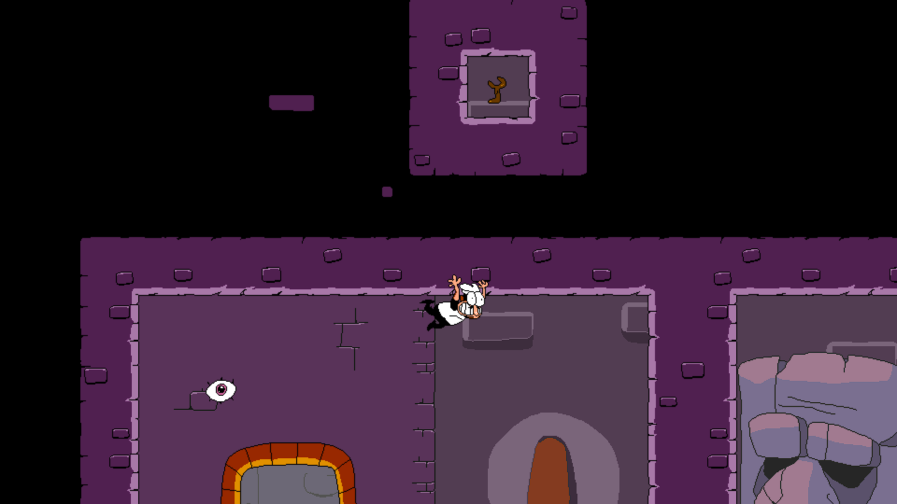
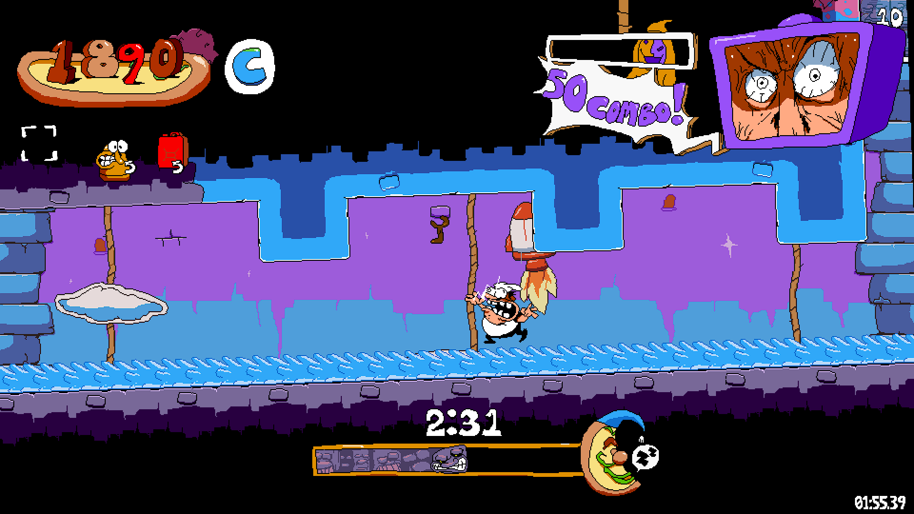
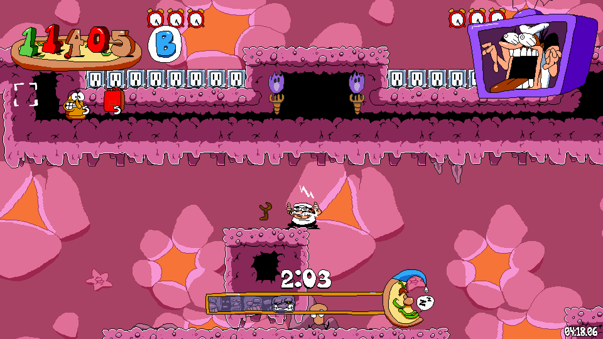
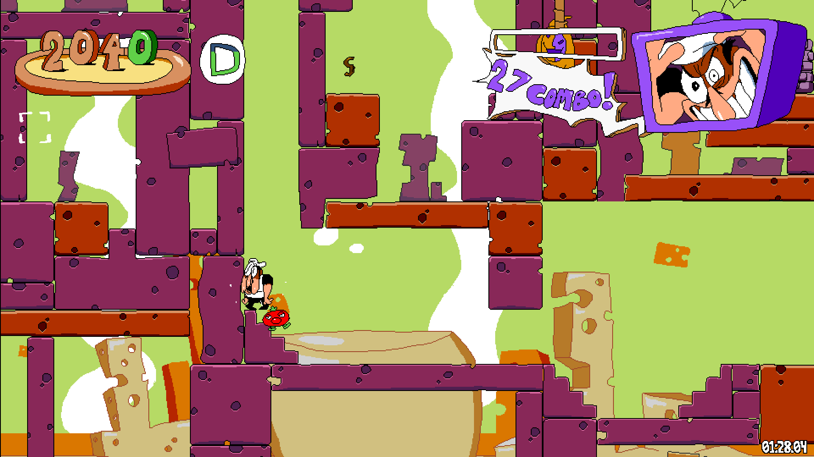

Mimics are a rare kind of Toppin that can appear at any time. Upon entering a room with a Toppin, there is a 2%* chance that the Toppin will become a mimic. Exiting and reentering the room will reset the Toppin and reroll the RNG. When a Toppin becomes a mimic, it has a 50% chance to play a distorted cry for help. Upon being collected, it will play the collect sound at 80% speed, and has a 50% chance to play a very loud sound. Mimic Toppins are entirely black, and retain the shape of whichever Toppin they replaced. Other than that, they function identically to normal Toppins and only serve to scare the player occasionally.
*When talking to GPB, he may mention the Mimics, stating that they are only there to harm you. This is misleading, as they do nothing other than jumpscare you. Reading this dialog will raise the chances of a Toppin becoming a Mimic to 50% until the next one spawns.
This is the music that plays in the Void Room, as well as the Pizzaboy Clone rooms. It contains a speech of unknown origin (possibly religious?). A rough transcript is provided below.
0:34 - [Unintelligible]
0:39 - Coming on down, coming on down today
0:43 - A resurrection
0:46 - I [Unintelligible] to the whole bloody world
0:50 - Raining, and raining, and raining, [flank] still raining.
0:55 - To what life [like time] of the world can be?
0:59 - [Secure] so many matters
1:01 - Ha-zi-est, to what [Unintelligible]
1:07 - [Unintelligible, perhaps another language?]
There's also a 0.5% chance every time you talk for him to say "leave" repeatedly afterwards.
Crustavo exists solely to say vague and ominous things to scare the player. None of his dialog is actually relevant.
His dialog in each location changes after you collect 25 Keys.
There are several fake Keys scattered around the tower. Here they are:
   